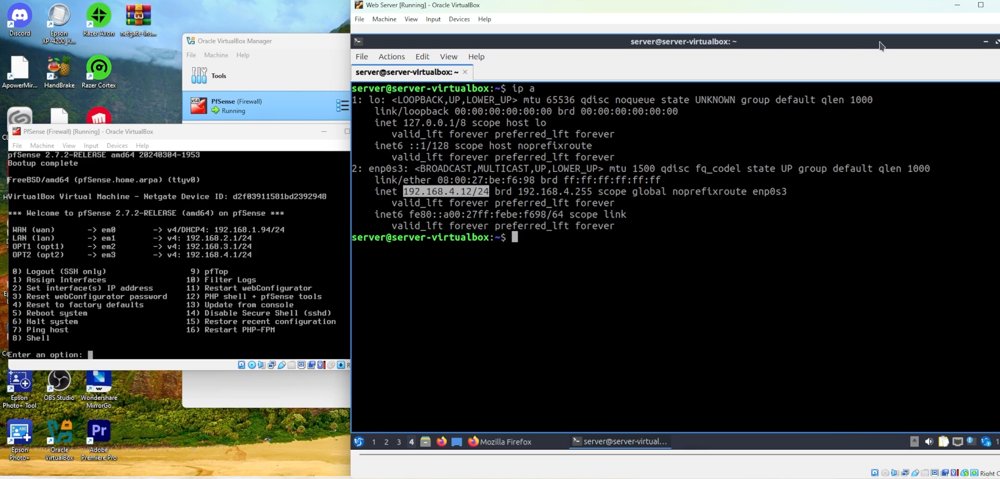
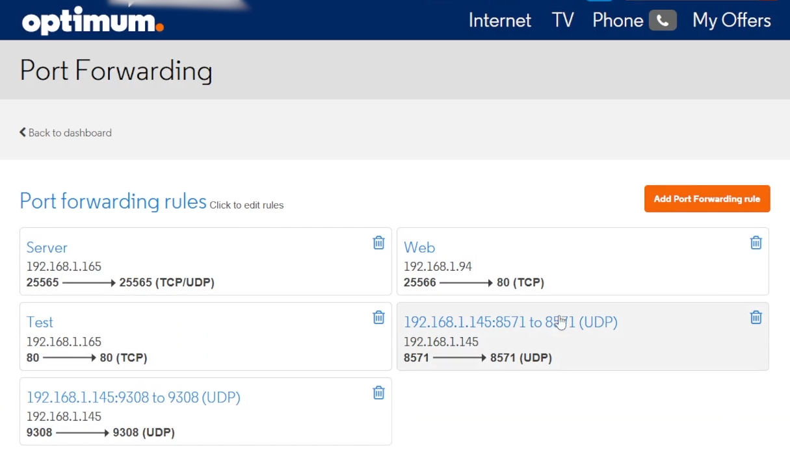
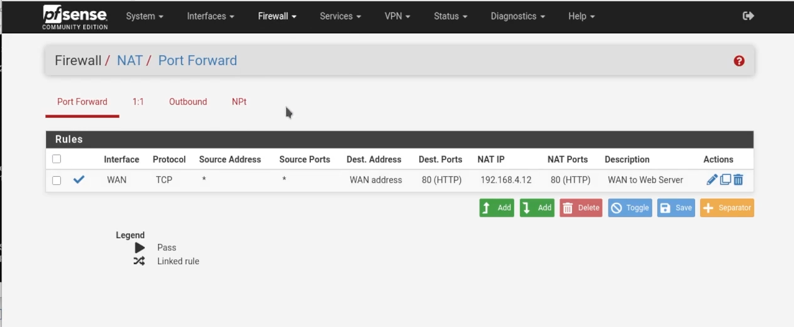
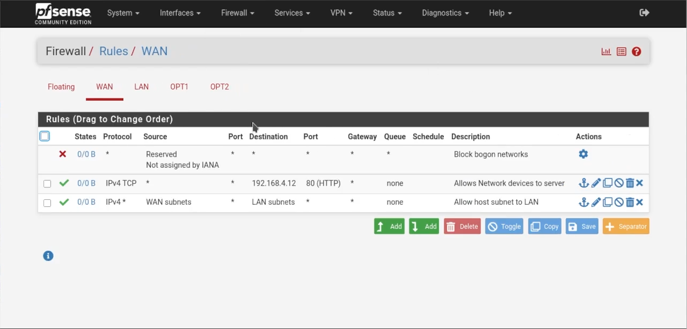

Purpose:
The goal of this project is to securely deploy a public-facing web server from within a virtual machine, while isolating it from the rest of the network devices by placing it in a DMZ.
Setup:
I created a new subnet designated as a DMZ and installed an Apache Web Server on a Lubuntu Linux VM. I port forwarded traffic from my ISP’s router to my VM network. From there, I then created an additional port forwarding rule on the VM’s pfSense router, forwarding the traffic received from my ISP’s router to the correct VM in the DMZ, while also configuring the appropriate firewall settings to allow this communication. Through this relay of forwarding, I was able to access the web server from anywhere.
Key Features:
• DMZ Network Isolation: The web server runs on its own subnet, as it is facing the public internet, so other network devices must be protected.
• Port Forwarding: Forwarded traffic twice, once from my internet facing ISP router to my VM network, and again from my VM router to the web server.
• Firewall Configuration: Created the appropriate firewall rules to allow communications on the appropriate ports.
• Apache Web Server: Apache was installed on a Lubuntu VM, with the default index page replaced by my custom test page.
The following documents key elements of my project, followed by the full video of my results.
DMZ:
Pictured here is the IP address of the VM hosting the web server, alongside the four subnets of my virtual network. You might recall from project 1 that the first subnet, 192.168.1.X is where the pfSense VM lies, alongside my regular network devices, serving as a bridged adaptor allowing the other VMs to access the internet. The next two subnets house the main LAN devices and the guest devices, while the newly created subnet, 192.168.4.X, hosts solely the web server.
ISP Port Forwarding:
Pictured here is the web interface for my router as provided by my ISP. Direct your attention to the rule titled “Web”. It is forwarding traffic from port 25566 to the IP address of my pfSense router, as you can see in the prior image, to port 80. This is because I discovered, through trial and error, that port 80 is blocked by default by most ISPs. In order to counteract this, I assigned a random port number and forwarded the traffic on that port to port 80. I simply chose the number after 25565, as you can see in the first port forwarding rule, which is for my personal game server and unrelated to this project. The “test” rule came from me troubleshooting port 80, while the last two are also unrelated to the project.
pfSense Port Forwarding:
Pictured here is the port forwarding web interface for the pfSense router. Here, the traffic that was relayed to my pfSense router from my ISP’s router, thanks to my first port forwarding rule, is forwarded to my web server’s IP address.
Firewall:
Pictured here is the firewall rule I created in order to allow communication on port 80 from external devices.
Server Accessibility:
Finally, pictured here is my website being accessed from an external device. As you can see in the image, Wi-Fi is disabled, so I am not connected to my local network, and my website is accessible to any device. I did not have a domain name, so the website was accessed by typing my public IP address, followed by the port number (e.g., my.public.address:25566).
Video:
Here is the video of me simulating the web server.